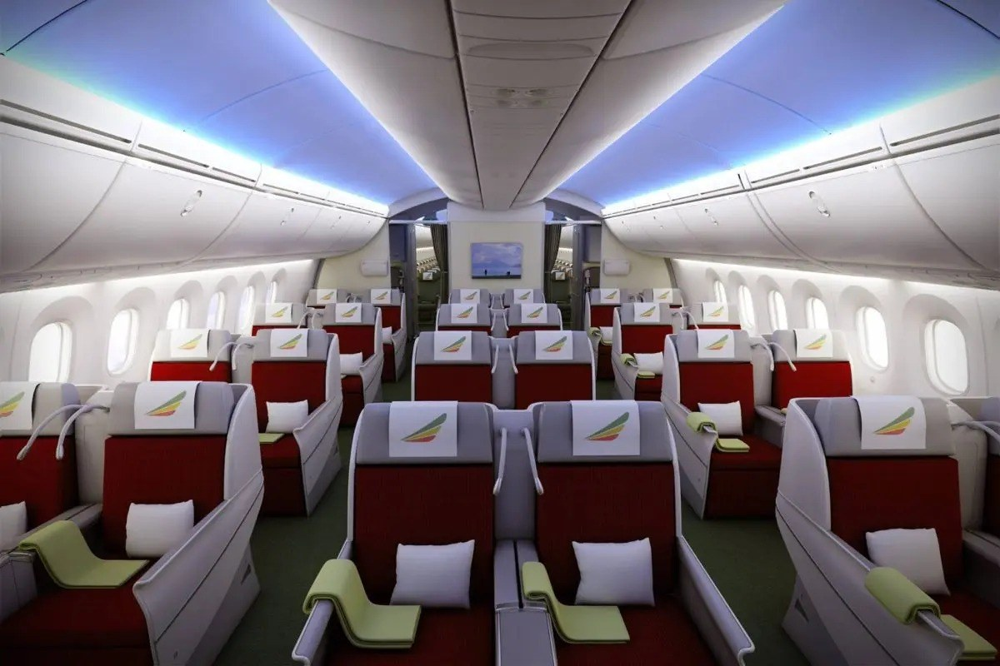

Handout: Ethiopian Airlines - editorial use
Kenya is first on the list for a levy on business class arrivals. The row of numbers behind it does not add up.
A COP31 declaration launched in Antalya on Tuesday welcomed small levies on polluting sectors, with Kenya among its backers. Four days earlier the task force Kenya co-chairs published the modelling, and Kenya came first of ten countries at $84 million a year. Work the report's own published figures back and the Kenya row implies a revenue base roughly four times the passenger base it uses to count the cost.
On Tuesday in Antalya, in the second week of a climate conference that Australia presides over and Turkey hosts, a declaration was launched that no East African hotelier will have read. Championed by the United Kingdom and backed by Spain, Kenya and Timor-Leste among others, it welcomes "the potential of targeted, small levies" and recognises "the potential of innovative approaches to complement existing sources of public and private finance." It commits nobody to anything. Bloomberg, which saw the draft, reported that Britain intends to carry the proposals into its G20 presidency year in 2027.
The declaration is not the story. The story is the number it was launched alongside.
Four days earlier, on 13 November, the Global Solidarity Levies Task Force published an impact study on premium flyer levies in small island developing states and least developed countries. The Task Force is co-chaired by France, Barbados and Kenya. The study models a flat charge of US$60 on short-haul tickets, meaning flights under 1,500 kilometres, and US$90 on long-haul, applied to first and business class passengers arriving in each of ten countries. Economy and premium economy are untouched. Across the ten the levy raises about US$199 million a year after allowing for a fall in demand, and of the ten, one country raises far more than any other. Kenya comes first, at US$84 million. Colombia is second at US$50 million, Mauritius third at US$22 million. In Kenya's case the authors note that the proceeds would come to 170.8 per cent of the country's average annual Green Climate Fund financing.
For a Kenyan lodge owner, that is an unusual way to find out that your highest-value arriving guest has been identified as a revenue line. And the political logic of it is not hard to follow. The Premium Flyers Solidarity Coalition was launched on 30 June 2025 at the development financing conference in Seville, with France, Kenya, Barbados, Spain, Somalia, Benin, Sierra Leone and Antigua and Barbuda as founding members, and President William Ruto's framing at the launch was about delivery rather than design. "What we need here is political will," he said. "We cannot keep talking about change without implementing it." Members committed to introduce a premium ticket levy where they have none, to tax private jets, and, in the phrase that matters most for Kenya, to pursue "upward harmonization and greater progressivity where levies already exist."
Kenya has one that exists. So the question an operator should be asking is not whether a new tax is coming from Antalya. It is whether the number that put Kenya at the top of that table can bear the weight now being placed on it.
Work the report's own tables backwards and it cannot, or at least not without an explanation the published text does not give.
The modelling is transparent enough to be checked, which is to its credit. The levy is stated as 13.6 per cent of the average premium short-haul fare in Kenya in 2024 and 3.2 per cent of the long-haul fare, which puts those fares at roughly US$441 and US$2,812 respectively. The demand response uses all-passenger air travel elasticities of minus 0.53 on short-haul and minus 0.48 on long-haul, producing falls in premium demand of 7.21 per cent and 1.52 per cent. The summary table gives an overall fall in Kenyan premium class demand of 4.88 per cent, and an absolute decrease of 15,090 premium arrivals.
A 4.88 per cent fall that removes 15,090 passengers implies a base of about 309,000 levied premium arrivals a year. Splitting that base so the segment-level falls average out to 4.88 per cent gives roughly 183,000 short-haul and 127,000 long-haul. Charge those passengers US$60 and US$90 and the gross take is about US$22 million. The report's published gross revenue figure for Kenya in 2024 is US$89.64 million, before the demand adjustment that brings it to US$84.21 million.
The gap is almost exactly four to one, which is itself the most useful thing about it. A ratio that round is not statistical noise. It is the signature of a methodological choice made in one table and not carried into another, and there are two obvious candidates. The levy may be applied to passengers in both directions while the arrivals used to count the tourism cost are one-directional, which would account for a factor of two. Or the revenue base may count all premium passengers passing through Kenyan airports, including those connecting onward, while the arrivals base counts only visitors. Either of those would reconcile the revenue line. Neither is harmless.
The second possibility is the one that should concentrate minds in Nairobi. Jomo Kenyatta International is a connecting hub, and is being rebuilt as a bigger one: Kenya signed a US$1.2 billion expansion contract this year with the explicit ambition of competing with Addis Ababa for exactly the traffic that transfers rather than disembarks. A premium levy that catches connecting passengers is not a tourism tax at all. It is a charge on the hub function, applied at the moment Kenya is borrowing to buy more of it, and payable by a passenger who could route through Addis, Kigali, Doha or Dubai instead without noticing the difference. A charge on an arriving safari client is a decision about yield. A charge on an arriving transfer passenger is a decision about competitiveness, and nothing in the published summary tells a Kenyan reader which of the two has been modelled.
Then there is the price the study puts on the guest it expects to lose.
The central case values lost visitor spending at US$9.1 million, derived from 15,090 lost premium arrivals at US$603 of spending each, which the authors report as 0.01 per cent of Kenyan GDP. The upper bound, in which every deterred passenger cancels outright, is US$18.2 million. On that arithmetic the levy looks close to free: eighty-four million dollars raised against nine million forgone.
Kenya's own government publishes a different figure for what a visitor is worth. Presenting the 2025/26 results in August, Tourism and Wildlife Cabinet Secretary Rebecca Miano put international arrivals at 2.76 million, up 9.8 per cent, and earnings at KSh564 billion, up 18.7 per cent, with average spend per international visitor rising from KSh189,000 to KSh204,298. At the 129.96 the Central Bank of Kenya quoted on 12 November, that is about US$1,572. The study's premium traveller is therefore priced at roughly two fifths of Kenya's average visitor, in a model whose entire premise is that the people it taxes are the ones who can afford it.
That is not a rounding quibble. It inverts the cost side of the calculation. A first or business class arrival into Nairobi in the high season is not an average visitor diluted; it is the client who sustains the bed night in the Mara, the conservancy fee, the charter leg to the airstrip, the extension to Zanzibar. Håvar Bauck, who built the Nairobi-based hotel technology business HotelOnline, made the point to Tourism Update in July, before this study existed. "The biggest source of revenue is not the tax on the flight ticket," he said. "It is the money tourists spend once they arrive."
In fairness, the authors say some of this themselves, and say it plainly. Their elasticities, they write, "are estimates for all passengers rather than for premium travellers specifically," which is why they present the demand falls as an upper bound and halve them in a premium-adjusted variant. On the cost side they note that "lost spending exceeds lost value added; substitution by other visitors and multiplier effects are excluded," and that premium fares may be understated. They recommend protecting essential connectivity through exemptions for medical, student and critical public service travel, and conclude that "our elasticity findings justify a careful exemptions list rather than broad carve-outs." This is a careful document that flags its own limits.
The difficulty is that declarations do not carry footnotes. What travelled from the report into Antalya was one figure, two hundred million dollars a year across ten countries, and the ranking inside it that puts Kenya first.
And Kenya already owns the machinery to act on it alone, which is why this is nearer than it looks. The Air Passenger Service Charge rose in October 2025 from US$40 to US$50 on international departures and from KSh500 to KSh600 on domestic ones. The Air Passenger Service Charge (Amendment) Act 2026, sponsored by the Leader of the Majority and assented to in September, did not change those rates. What it changed was the plumbing: collection moved to the Kenya Revenue Authority, and proceeds now go directly to the Kenya Airports Authority, the Kenya Civil Aviation Authority, the Kenya Meteorological Service Authority and the Tourism Fund, with the Cabinet Secretary setting the allocation formula by gazette notice. The previous split on international tickets was 60 per cent to the airports authority, 20 per cent to the civil aviation authority and 20 per cent to the tourism promotion fund. Kitui Central MP Makali Mulu objected during the debate that "the accounting officer should be able to specify how much money goes to each institution," and the Act's answer was to leave that to a gazette notice.
Read the coalition commitment against that and the instrument is obvious. Kenya does not need a new tax to deliver "greater progressivity where levies already exist." It needs a cabin-differentiated Air Passenger Service Charge, which is a line in a gazette notice from a Cabinet Secretary, collected by an authority that already collects it, remitted in part to a Tourism Fund that already receives it. No bill, no committee stage, no second reading.
The airlines have made their objection, and it is worth reading for what it concedes as much as what it claims. Willie Walsh, IATA's director general, said the industry "is an economic catalyst, not a cash cow," arguing that aviation is a "lifeline for remote communities" that "invigorates tourism markets," and that the plan would "short-change countries on the critical economic support that air transportation provides." Every word of that is also a commercial interest, and IATA's preferred alternative, more sustainable aviation fuel, is not free to passengers either. But the specific charge that the recipient economies' own exposure was never assessed is the one this study was written to answer, and on Kenya it has answered it with a row that does not reconcile.
What is missing is the number only the industry can supply. There is no published figure for the share of East African long-haul arrivals travelling in first or business class, nor for what those passengers spend on the ground relative to the average, and anyone quoting one is guessing. The modelling instead uses International Council on Clean Transportation passenger counts for 2023, 2019 economy fares from RDC Aviation uprated by consumer price inflation, and IATA cabin multipliers to infer what a business class seat costs. That is a reasonable way to build a global estimate and a poor way to price a Kenyan safari client.
The consultation is open: Britain has said it will push the agenda through its G20 year, and the Task Force is still soliciting technical work. No Kenyan or Tanzanian operator association has put a cabin-level yield figure into that process. Until one does, the levy that lands on the region's best-paying guest will be designed from an inferred fare, a borrowed elasticity and a visitor valued at US$603.
📣 Telegram 💬 WhatsApp 💼 LinkedIn 📚 All guides